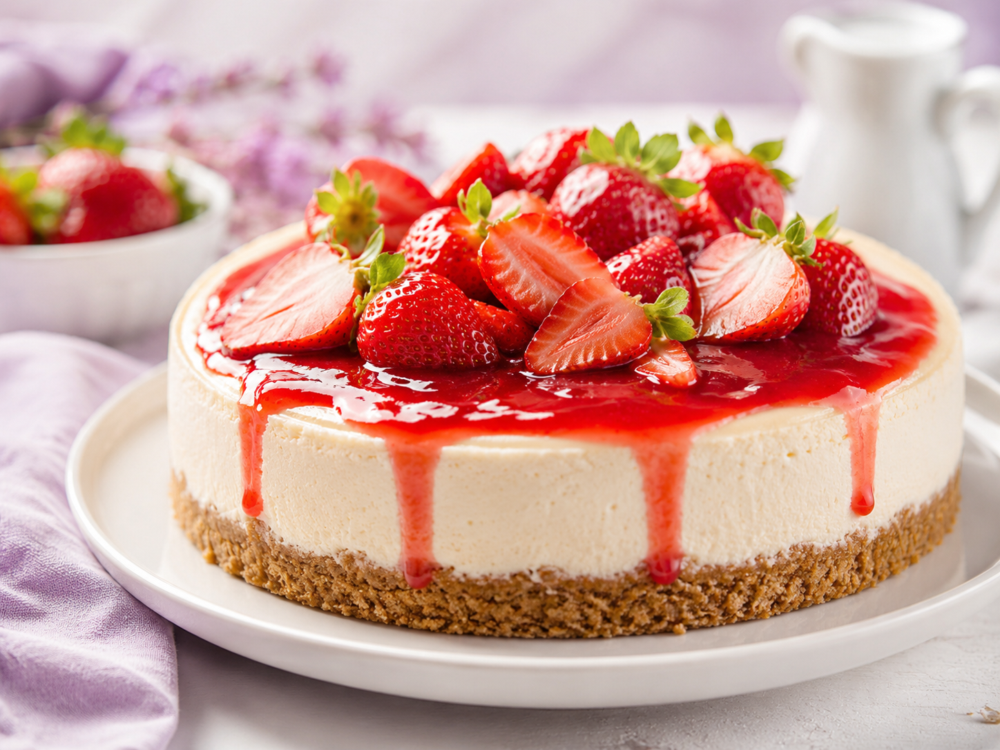
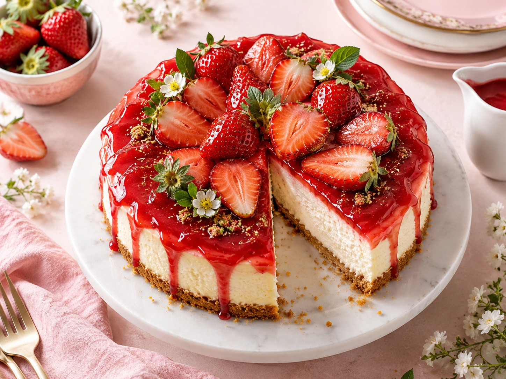
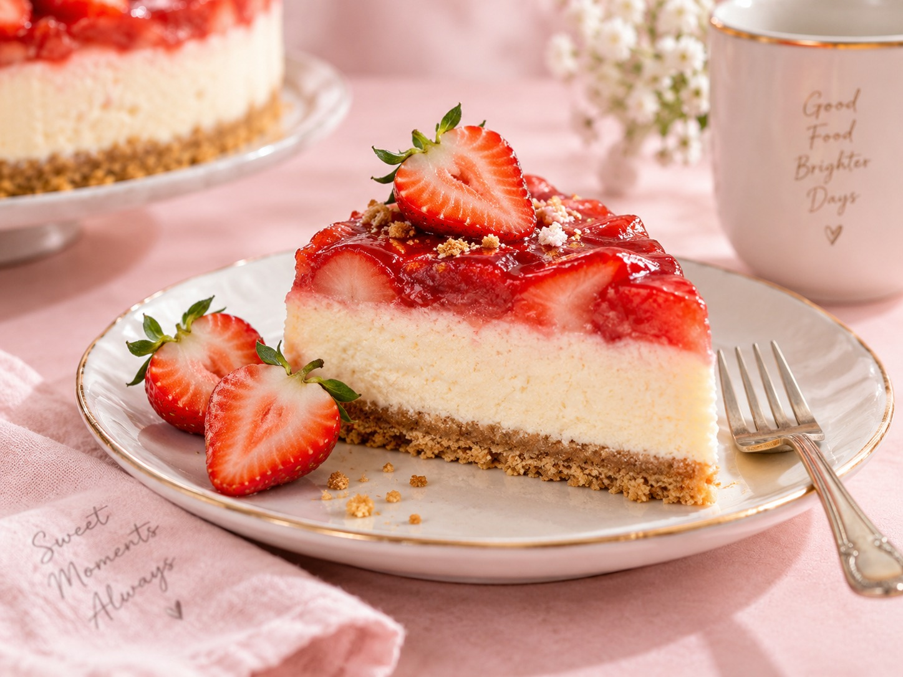
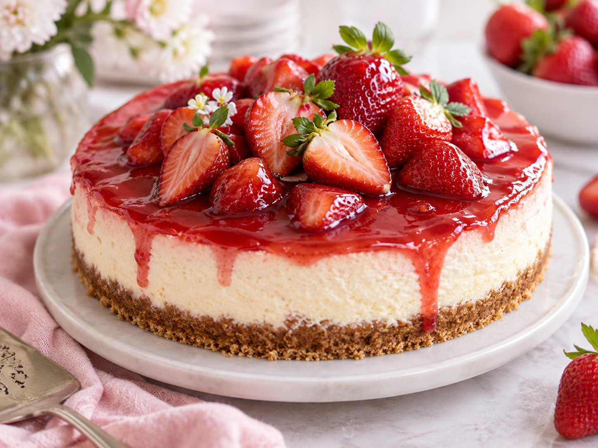

cheese cake ♡
Warm, gooey, and made to melt your heart.
⏱ 30 min
Prep Time
⏱ 12 min
Cook Time
🧁 Easy
Difficulty
☆ 4.9
128 reviews
A decadent strawberrychese cake with a soft, a soft creemy texture that will melt in your mouth with every bite. Perfect for special occasions or when you just need a little sweet strawberry creamy hug. ♡